Journal
2014 /Editorial Design /Master's Degree Work
A collection of the works I did during the first year of my Master’s degree in Graphic Design and Editorial Projects. The entire book was sewn and bound by me.
 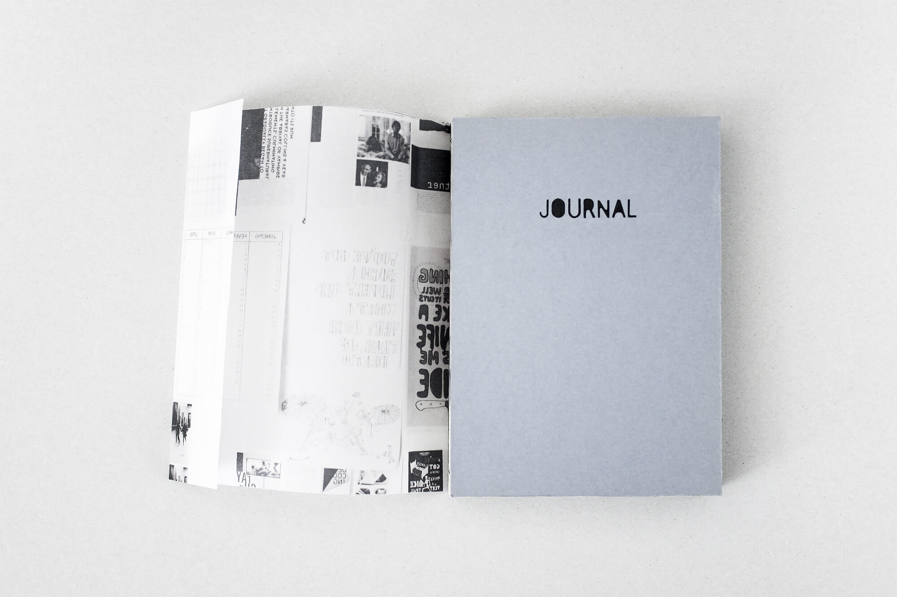
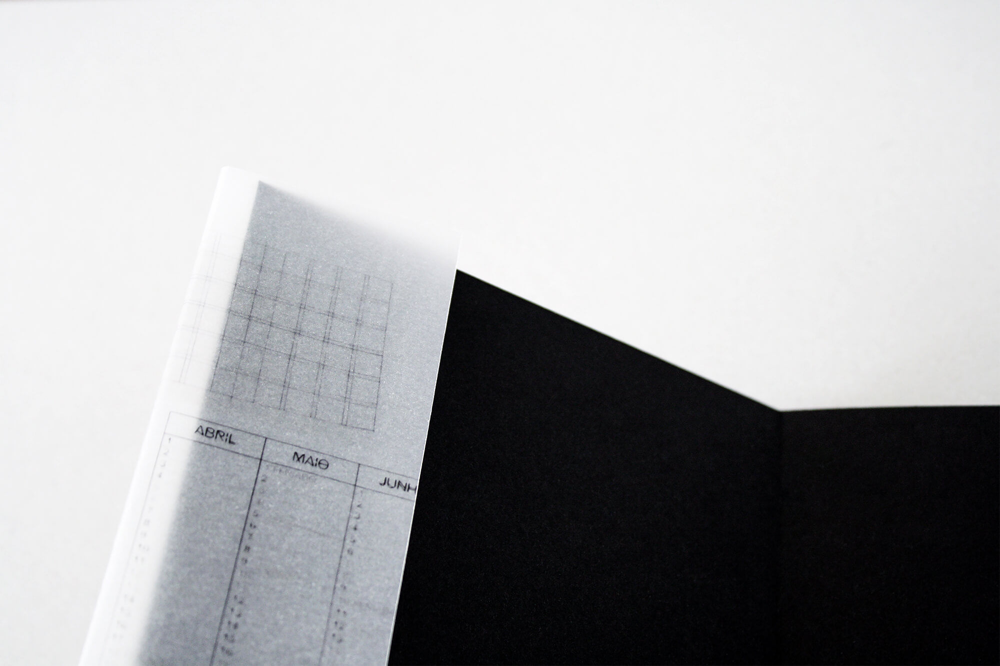
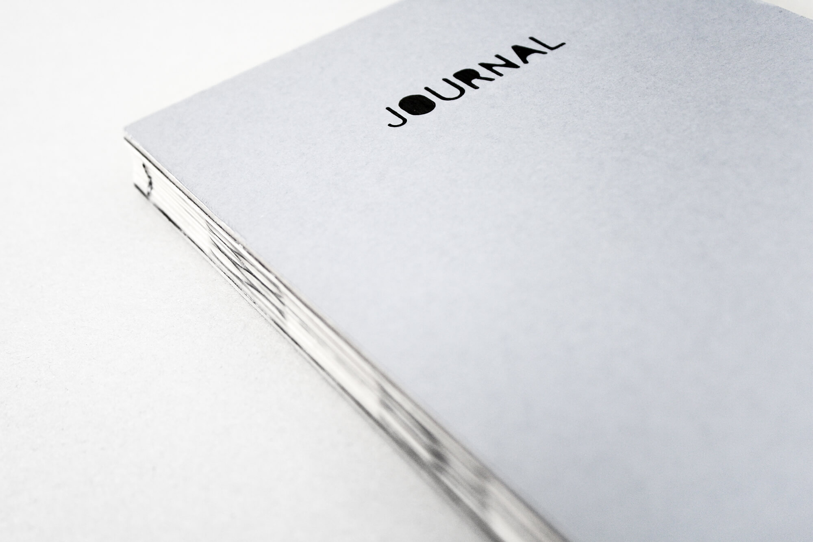
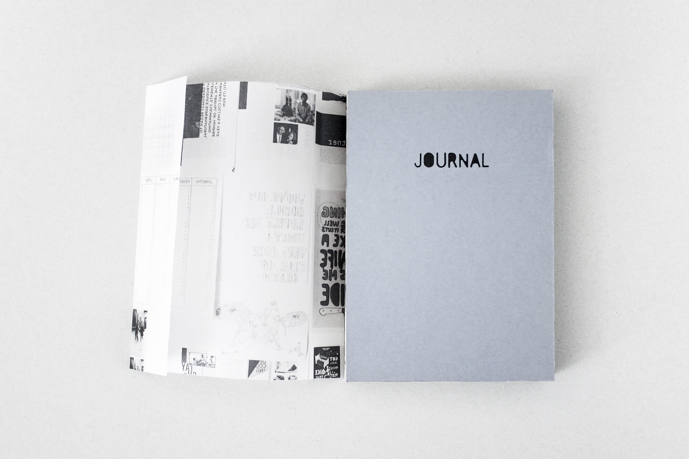
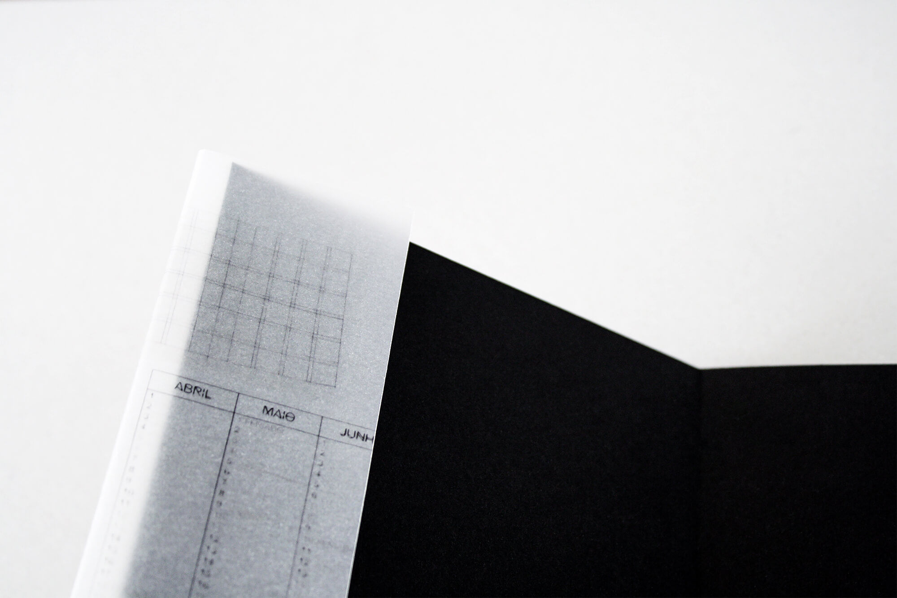
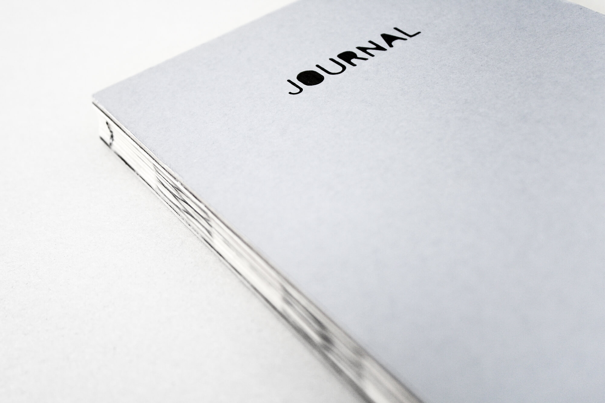
 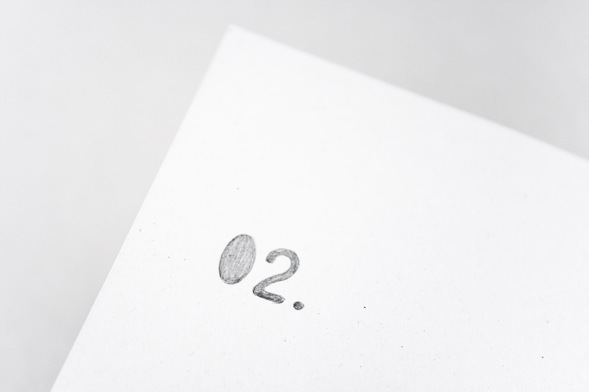
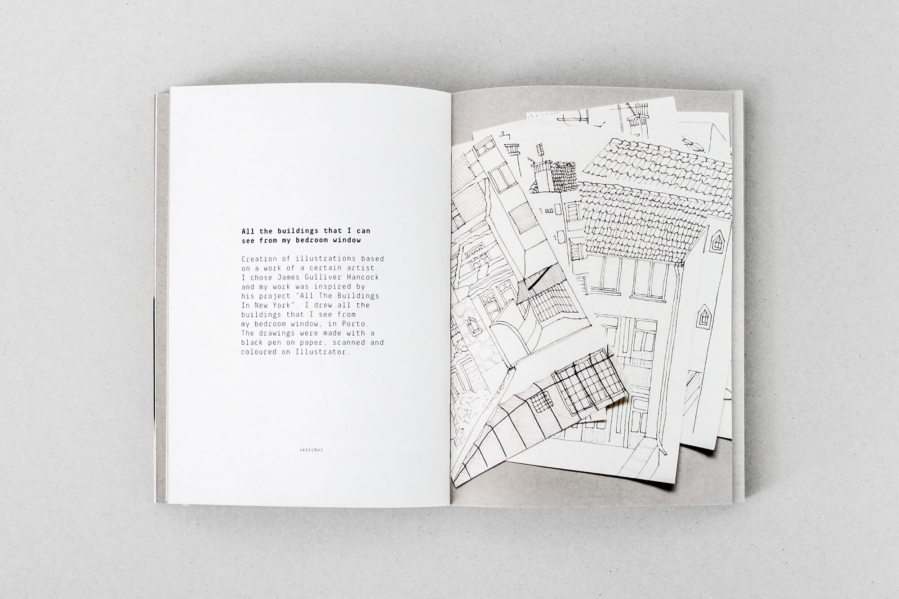
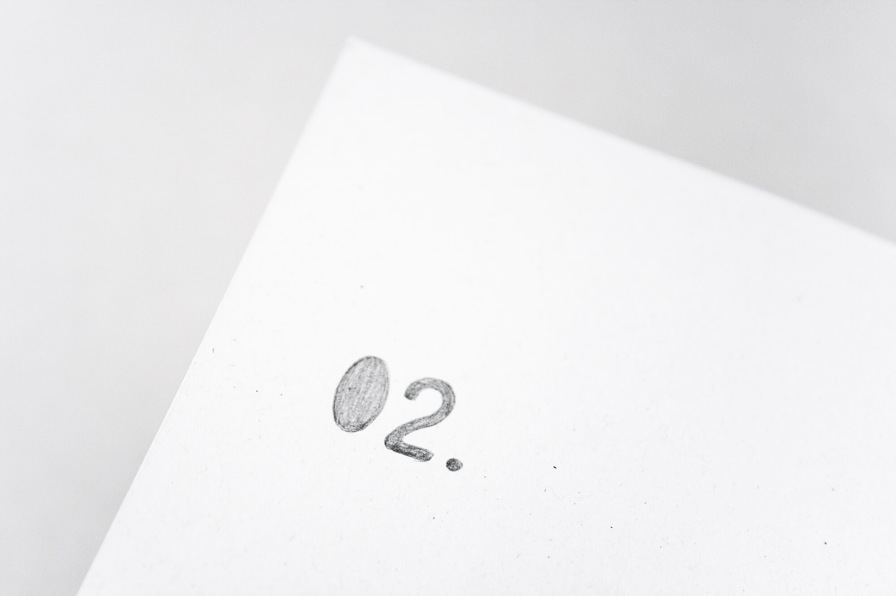
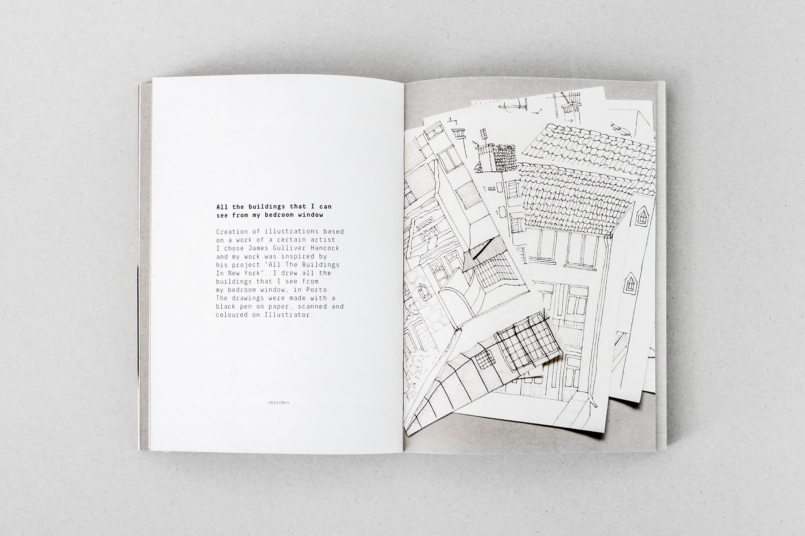


 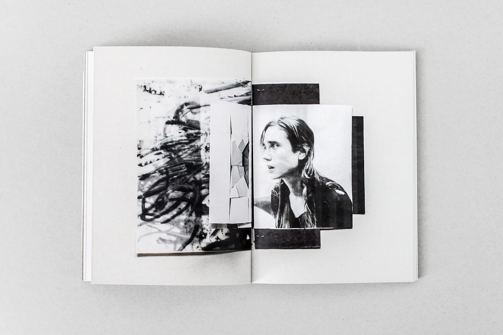
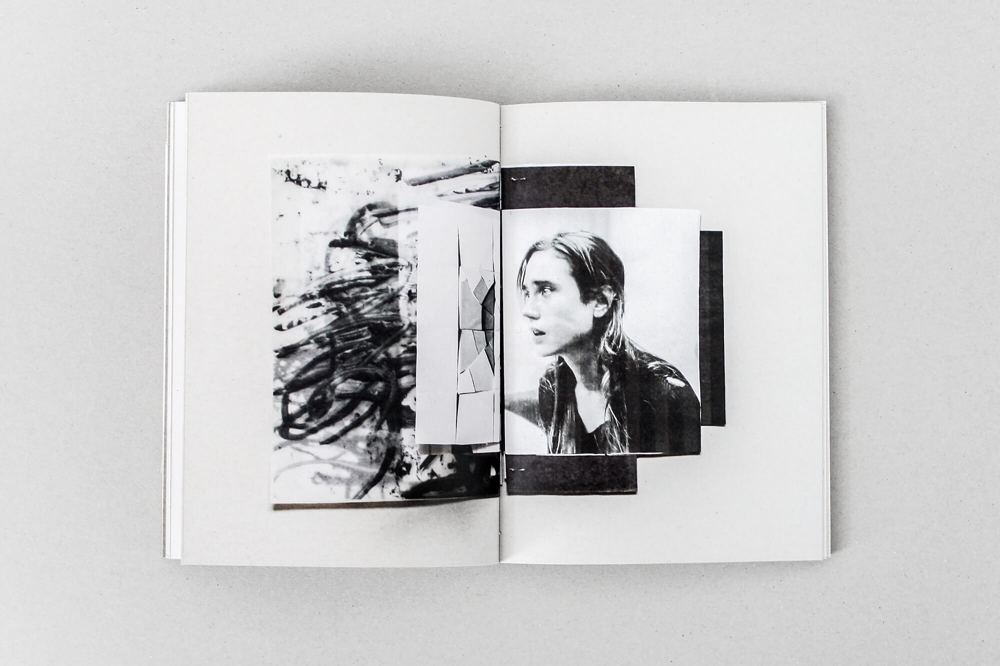

go back
back to top